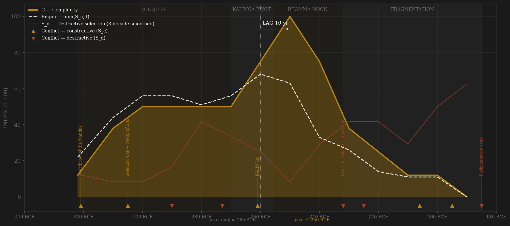
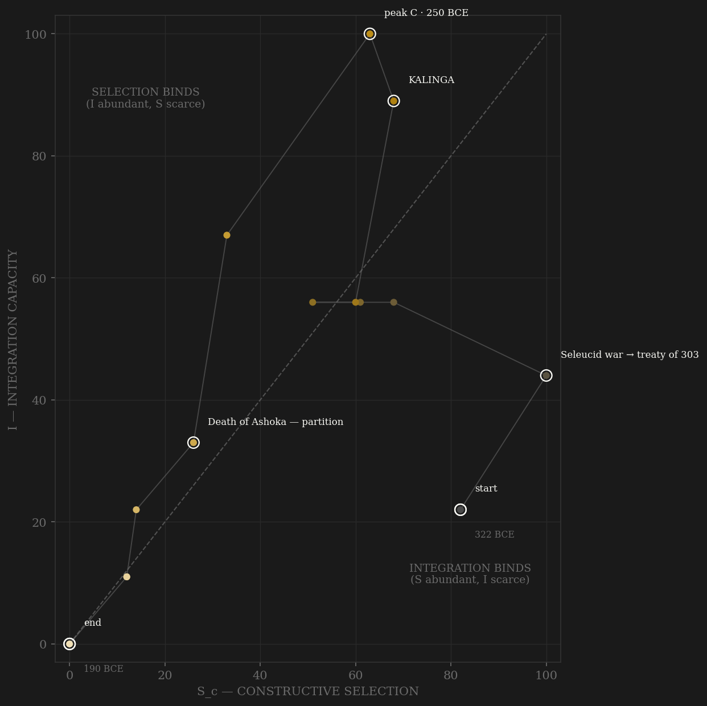

The arc rises on a parvenu's ladder: Chandragupta — the vrishala of the hostile tradition, a man of no lineage raised by Kautilya's talent-scouting — takes the Nanda state whole, clears the Greek garrisons, and settles the era's biggest peer contest by treaty: Seleucus trades the eastern satrapies for 500 war elephants and a marriage clause (Strabo 15.2.9) — the rivalry priced, like Chanyuan, not fought to exhaustion. The administrative picture beneath is coded with a flag this page will not let go of: the Arthashastra's meritocratic machinery — amatyas selected by integrity-test, a spy service recruited across varnas — CANNOT be read as Mauryan description, because Trautmann showed the text is a composite redacted centuries later; where Megasthenes' fragments or the edicts corroborate an institution, the coding leans on those instead. Kalinga (261) is the pivot the whole composite turns on: an external conquest whose cost survives in the emperor's own published count — 100,000 slain, 150,000 deported (RE XIII) — and which triggers the most documented policy reversal in ancient history: the drum of war becomes the drum of dhamma, conquest is renounced BY EDICT, and channel B collapses as endogenous choice, not imposed peace. What follows is the dhamma noon, and it is the one stretch of pre-modern India you can MEASURE: dated rock edicts from Kandahar (in Greek and Aramaic) to Karnataka, a new career class — the dhamma-mahamattas of RE V, created ~256, the clearest dated elite-entry event in pre-modern India — officials ordered on five-year inspection circuits by RE III, polished Chunar monoliths quarried and hauled empire-wide, punch-marked silver circulating from hoard to hoard. Engine and complexity crest a decade apart. Then Ashoka dies in 232 and the arc simply breaks: edict production stops dead with the Nagarjuni cave grants, viceroys become kings, the Puranic king-lists diverge — the record itself fracturing with the center — and within a generation most provinces are gone. By 206 Antiochus III is exchanging courtesies with an independent king in Gandhara (Polybius 11.34). In 185 the senapati Pushyamitra kills Brihadratha while reviewing the army the emperor nominally commanded. Forty-seven years from the great emperor's death to the dynasty's extinction: the empire did not exhaust — it was decapitated, and the Shunga successor inherited a core still functional enough to fight the Bactrian Greeks.

The trajectory enters bottom-left as a conquest band and climbs both axes through the founding generation — the Seleucid treaty and Megasthenes' embassy mark the polity arriving as a peer. The path then does something unique in the sample: after Kalinga it moves UP the integration axis while selection pressure is deliberately shut off — the dhamma noon sits far into the integration-binds region, an empire holding maximum reach with its rivalry channel renounced by policy and its internal contest running entirely on rescript. Liebig reads this as the engine throttling itself at the moment of maximum coordination — and when the one man the whole over-centralized machine answered to dies, the trajectory does not descend, it falls: integration is torn away in province-sized pieces (the R column tracks territory leaving, not people dying) while destructive selection climbs to the terminal coup. The path dies in the lower-left corner within five rows of its apex — the phase-portrait signature of decapitation (Babylon precedent), not of the long annuity decay the theory's lag window was built to time.
Coded by locus and target, never by outcome. The Nanda overthrow is B — the Maurya machinery attacked a RIVAL state's apparatus, not its own (the mirror rule: had the Nandas a page, it would be their terminal S_d). Seleucus 305-303 is B settled by treaty — priced rivalry, the Chanyuan precedent. Kalinga is B at maximum amplitude and the key entry of the ledger: external conquest, self-documented cost, and the trigger of the dhamma turn — the only case in the sample where a polity's B channel is closed by the polity's own published remorse. The succession struggle of 273-269 is S_d coded at 7, not 10: the '99 brothers' of the Buddhist tradition is formulaic hagiography (Thapar ch.2), and the hard datum is the four-year gap between accession and coronation — a contested succession of unknowable magnitude, coded conservatively rather than colorfully. Pushyamitra 185 is the textbook terminal decapitation: the army destroying its own dynasty's apex at a troop review — locus purely internal, target the throne itself.
| YEAR | CONFLICT | CODE | CODING RATIONALE |
|---|---|---|---|
| 321 BCE | Overthrow of the Nandas | Sc | A rival state's machinery taken, not the Maurya's own — external locus per polity (mirror rule); the founding contest, followed by clearing the Greek garrisons 317-316 |
| 305 BCE | Seleucid war → treaty of 303 | Sc | The great peer contest SETTLED BY TREATY: eastern satrapies for 500 war elephants + epigamia (Strabo 15.2.9) — rivalry priced, Chanyuan precedent; embassies (Megasthenes) institutionalize the contest |
| 290 BCE | Taxila rising (under Bindusara) | Sd | Provincial revolt aimed at 'wicked ministers' (dushtamatyas) — internal machinery attacked from below; ○ Ashokavadana tradition, date approximate, coded modest |
| 273 BCE | Succession struggle 273-269 | Sd | The fratricide tradition ('99 brothers') is formulaic Buddhist hagiography — coded conservatively (Thapar ch.2); the hard datum is the four-year accession-to-coronation gap: a real contested succession, magnitude unknowable |
| 261 BCE | KALINGA | Sc | External conquest coded from the emperor's own count — 100,000 slain, 150,000 deported (RE XIII, ◐ self-reported) — THE PIVOT: its cost triggers the dhamma turn; conquest renounced by edict thereafter (endogenous B collapse, inverse-Ili precedent) |
| 232 BCE | Death of Ashoka — partition | Sd | The succession fractures the empire within the decade — Dasharatha east (Nagarjuni grants = last dated Maurya inscriptions), Samprati west per Jain-Puranic lists (○); edict production stops dead |
| 225 BCE | Fragmentation wars (220s) | Sd | Provinces secede across the decade; rival lines at Pataliputra and Ujjain; the diverging Puranic king-lists are themselves the record of a broken center; date placed mid-decade |
| 206 BCE | Antiochus III & Sophagasenus | Sc | The Seleucid renews 'friendship' with an INDEPENDENT king in Gandhara (Polybius 11.34, ◐ Greek anchor) — external contest resumed, but the datum is what it proves: the entire NW outside Maurya control |
| 195 BCE | Demetrius' Bactrian invasions | Sc | Greco-Bactrian pressure on the NW (~190s-180s, Strabo 11.11.1 — chronology contested, ○): frontier locus, real but peripheral to the coup that ends the dynasty |
| 185 BCE | Pushyamitra's coup | Sd | The senapati kills Brihadratha AT A REVIEW OF HIS OWN TROOPS (Harshacharita; Puranas) — terminal: the army destroying its own dynasty's apex; the textbook decapitation locus, the Shunga inherits the core intact |
| COMPONENT | GRADE | BASIS |
|---|---|---|
| S_c — channel A, elite-entry (0.40) | ○ scholar-coded, TRAUTMANN CAVEAT | New-man founding (Chandragupta the vrishala, Mudrarakshasa tradition ○); amatya selection-by-test + cross-varna spy service are ARTHASHASTRA-DESCRIBED — Trautmann 1971 showed the text is a composite redacted centuries post-Maurya, so these codings are conservative and flagged; Megasthenes' officer hierarchies (○ fragmentary) and the edicts corroborate where they can; kumara viceroy apprenticeship; shreni incorporation; DHAMMA-MAHAMATTAS ~256 (RE V = ◐ epigraphic) — a new career class by edict, the clearest dated channel-A event in pre-modern India; decay: post-Ashoka provincial hereditization, court-faction capture, the senapati line outlasting the throne |
| S_c — channel B, peer rivalry (0.30 HARD CAP) | ○ coded + ◐ anchors | Nanda overthrow + Greek garrisons (founding); Seleucus 305-303 settled by treaty (Strabo 15.2.9); embassy competition; KALINGA 261 (RE XIII ◐ self-reported cost) = the pivot; post-261 collapse is ENDOGENOUS RENUNCIATION (dhamma-vijaya) — policy, not peace; NW pressure returns — Sophagasenus 206 (Polybius 11.34 ◐), Demetrius ~190s (chronology contested) |
| S_c — channel C, within-rules contest (0.30) | ○ scholar-coded | Mantriparishad politics; kumara viceroy system as managed provincial balancing; THE DHAMMA CONTEST = the C showcase — empire-scale ideological reorientation fought and promulgated via edict (RE XII restraint-between-sects, the schism edict); decay: Radhagupta-style kingmaking, then contest goes extra-institutional |
| S_d — Destructive | ○ coded, HAGIOGRAPHY-CONSERVATIVE | Taxila risings (○ Ashokavadana); succession 273-269 coded 7 not 10 — the '99 brothers' is formulaic legend, the coronation gap is the hard datum (Thapar ch.2); post-232 fragmentation wars (diverging Puranic king-lists = evidence of the broken center); Pushyamitra 185 = terminal decapitation (Harshacharita/Puranas) |
| Sc_v1_combat (frozen synthetic) | ○ scholar-coded | Channel B alone (external-war-only, the prior definition's operative content) — no v1 page ever existed; synthesized per the straight-to-v2 rule (Mughal/Gupta/Athens precedent) |
| I — Integration | ○ coded on ◐ edict-map backbone | THE EDICT MAP = measured imperial reach (◐): dated rock/pillar edict sites Kandahar (Greek-Aramaic bilingual) to Karnataka, phased by regnal year (major REs ~257-256, pillars ~243); RE III anusamyana 5-year inspection circuits; dhamma-mahamatta network (RE V); royal highway Pataliputra-Taxila (Megasthenes/Strabo 15.1.50 ○ — the Grand Trunk Road's precursor); karshapana punch-marked currency empire-wide (hoards, Gupta & Hardaker ◐ with attribution uncertainty) |
| C — Complexity | ○ coded + ◐ archaeological | Pataliputra: Megasthenes' 570 towers/64 gates = ○ FLAGGED (fragmentary transmission); Bulandi Bagh excavated timber ramparts + Kumhrar 80-pillar hall = ◐ confirm scale; polished Chunar monoliths quarried and moved empire-wide (◐ — the hardest material anchor the polity has); four-script chancery (Brahmi/Kharoshthi/Greek/Aramaic); coin volume (◐); stupas ('84,000' = ○ formulaic; Sanchi core ◐) |
| E — Entropy | ○ coded + ◐ anchors | Founding famine tradition (Bhadrabahu legend ○; Sohgaura/Mahasthan relief plates possibly Mauryan, ◐ dating disputed); Kalinga's cost by the emperor's own count (◐); POST-ASHOKA FRAGMENTATION SPEED — most provinces gone within a generation of 232, dynasty extinguished 47 years after Ashoka's death: reported as a decapitation case, not forced into the inflection frame |
| R — Renewal (population) | ○ order-of-magnitude | Polity-controlled population in MILLIONS (McEvedy & Jones basis, ~30M South Asia ca. 200 BCE; empire at maximum ~25-30M); post-232 fall TRACKS TERRITORY — provinces seceding, not demographic collapse; said in R_notes |
14 decade rows (-322 off-decade founding row, Han/Athens precedent, then -310…-190; decade -D covers years D…D-9 BCE, so Kalinga 261 sits in -270, the dhamma-mahamattas in -260, the pillar edicts in -250, Ashoka's death in -240, the coup in -190) built by scripts/build_maurya_sicre.py — a straight-to-v2 contestability build (AMENDMENT_S_definition_v2.md): Sc_constructive = 0.40 elite-entry (Trautmann-flagged Arthashastra institutions coded conservatively; dhamma-mahamattas RE V = the dated ◐ anchor) + 0.30 peer rivalry (hard cap; Kalinga the pivot; post-261 collapse = endogenous renunciation) + 0.30 within-rules contest (the dhamma-policy contest via edict); Sc_v1_combat = channel B alone, synthesized per the straight-to-v2 rule. Channel ledger: data/raw/maurya/coding_ledger_v2.csv; audit: components_audit.csv; the three source-quality regimes (Trautmann dating, Buddhist/Jain hagiography, Megasthenes' transmission) + the ◐ edict backbone: data/raw/maurya/SOURCES.md. FROZEN-PROTOCOL LAG UNDER BOTH DEFINITIONS (3-decade centered rolling mean, engine=min(Sc,I)): v2 engine -260 (dhamma-mahamatta decade) → C -250 (pillar-edict decade) = +10 SIMULTANEOUS; v1 engine -280 → C -250 = +30 PASS. UNSMOOTHED SENSITIVITY (Athens short-series precedent): v2 -260 → -250 = +10 SIM (unchanged); v1 -270 → -250 = +20 PASS — the v1 PASS is soft: smoothing moves its engine peak between the quiet -280 decade and the Kalinga row, and the definitions disagree only by the width of the tolerance band. RESOLUTION CAVEAT: 14 rows — one 3-decade smoothing window spans ~21% of the polity's life; peak locations are coarse and the lag should carry little weight in pooled tests. ○ HALO CAVEAT: scholar-coded polities cluster at SIMULTANEOUS (gupta 0, achaemenid 0, sasanian 0, abbasid -10, umayyad 0) — Maurya v2 (+10 SIM) fits the cluster; the same historians' narrative feeds both S and C codings. THE HONEST HEADLINE IS NOT THE LAG: Ashoka dies 232, most provinces are gone within a generation, the dynasty is extinguished in 47 years, and the killer is the army chief at a troop review while the successor state inherits a core still able to fight the Bactrian Greeks — Maurya is a DECAPITATION/over-centralization case (Babylon precedent; Thapar ch.8's diagnosis), not a slow-exhaustion inflection datum. Rebuild: ~/grove/venv/bin/python ~/vitalic.stoicism/scripts/build_maurya_sicre.py, then polity_report.py --slug maurya